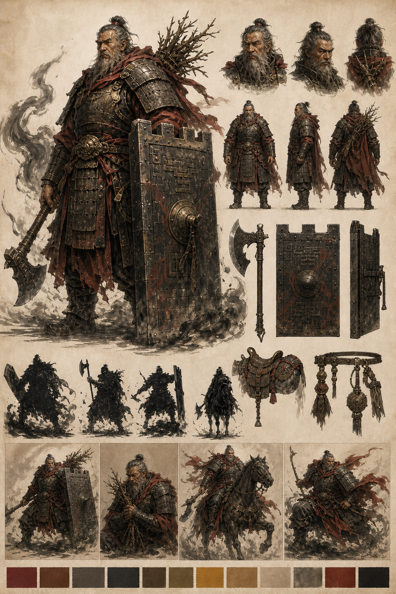
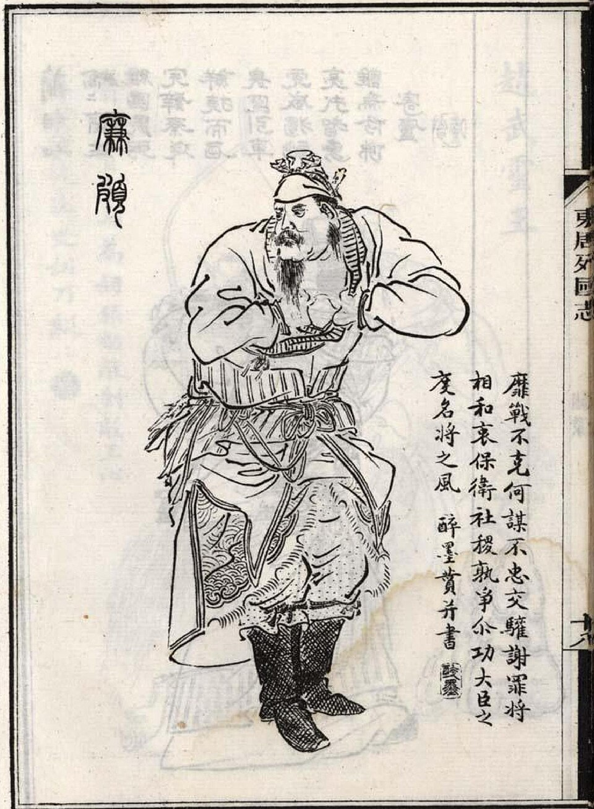

春秋战国英雄化角色设计 · 01
廉颇
赵壁 · 负荆的玄甲老将
他不是最快的矛，而是赵国最后还能站住的城墙。设计方向以《史记》和《战国策》的文字形象为一级依据，以《东周列国志》绣像为视觉原型，再转译成适合年轻人阅读的原创英雄化角色。
身份赵国良将，攻城野战有大功，以勇气闻于诸侯。
性格有傲气，但能负荆请罪；不是莽夫，是能顾全社稷的老将。
战法长平前期固壁不战，核心不是冲锋，而是沉稳防守。
晚年“被甲上马”，证明自己仍可用，形成强烈的老将悲剧感。
{kind=link}

原创概念设定 v1。注意：图中“背后荆条”属于负荆请罪故事态，不应作为主战斗造型的常驻装备；下一版主造型会去掉或弱化，只在故事皮肤/剧情动作中出现。
史料明确
古图参考
合理推导
原创虚构
元素证据标注
史料明确
廉颇是赵国良将
《史记》明说“廉颇者，赵之良将也”；攻城野战、长平守势、晚年被甲上马都属于文字依据。
古图参考
老将姿态与须髯
《东周列国志》绣像提供了粗壮体态、武将束装、长须和前倾动作。它是后世造像，不是真实肖像。
合理推导
重甲、旧铁、低重心
根据“良将”“固壁不战”“被甲上马”推导出防守型重甲老将。具体甲片样式不是史书逐项记载。
原创虚构
壁盾、战钺、气场
城墙式大盾、战钺造型、赵壁不倒技能、墨烟气场、固定色板都是游戏化原创设计语言。
原型依据

- 史料明确《史记》：廉颇者，赵之良将也。此句确立他首先是“赵国良将”。
- 史料明确负荆请罪：肉袒负荆，因宾客至蔺相如门谢罪。荆条只适合剧情态，不适合常驻战斗态。
- 史料明确长平守势：赵军固壁不战。合理推导防守型角色定位。
- 史料明确老而披甲：一饭斗米，肉十斤，被甲上马。合理推导旧甲、马具与晚年仍战。
设计语言
剪影
合理推导宽肩、低重心。原创虚构城墙盾。荆条改为剧情态，不放进主剪影。
武装
合理推导旧铁札甲、厚肩甲。原创虚构战钺/短戈的具体造型。
情绪
史料明确傲而能认错。合理推导压住火气的沉稳，不做狂战士。
元素
原创虚构土金色板、墨势、城墙视觉系统。它服务于“守势老将”的现代转译。
动作姿态
守壁
史料明确固壁不战。原创虚构大盾落地、城墙式防线动作。
负荆
史料明确负荆请罪。它是剧情动作/故事皮肤，不是主战斗常态。
被甲上马
史料明确被甲上马。合理推导马具、旧甲、晚年仍战的动作设计。
游戏化定位
- 合理推导角色类型：防守型统帅 / 坦克 / 阵地核心。
- 原创虚构被动幻想：老将余烈。受伤越多，站得越稳，防御与韧性提升。
- 原创虚构核心技能：固壁不战。插盾立阵，形成赵国壁垒，保护队友。
- 原创虚构终极幻想：赵壁不倒。展开城墙式战阵，敌人正面突破困难。